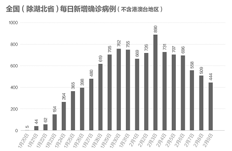
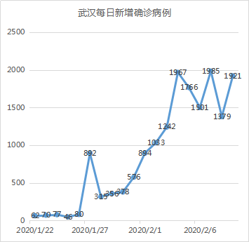
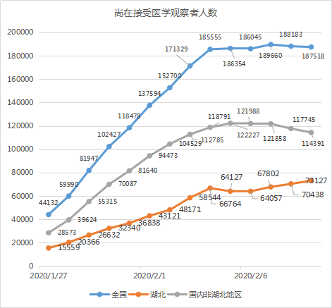

数说疫情0209：洪峰通过，见“顶”可期
原文链接 备份链接 文 |《财经》数据研究员 徐进 编辑 | 谢丽容 元宵节过完了，再下来是“龙抬头”。 1、 今日概况 2月8日0—24时，31个省（自治区、直辖市）和新疆生产建设兵团报告，新增确诊病例2656例（湖北2147例），新增 …


图/法新
文 |《财经》数据研究员 徐进
图 | 视觉中心总监 黎立
编辑 | 谢丽容
1. 今日概况：
2月9日0—24时，31个省（自治区、直辖市）和新疆生产建设兵团报告，新增确诊病例3062例（湖北2618例），新增重症病例296例（湖北258例），新增死亡病例97例（湖北91例，安徽2例，黑龙江、江西、海南、甘肃各1例），新增疑似病例4008例（湖北2272例）。

图1
2. 新增病例：武汉大幅反复，其他地区继续趋缓

图2
非湖北地区继续下降。其柱状图与17年前SARS图形极为相似。

图3
湖北非武汉地区也继续下降。

图4
武汉数据又有大幅波折。昨天推测武汉“洪峰主体很可能已于2月7号通过”，过于乐观。看来“堰塞湖”仍需继续化解。我们没有武汉更详细数据，但从湖北发布的疑似病例数据可以做一些印证。湖北现有疑似病例18438人，比前一天下降5200人；集中隔离14388人，增加1460人，隔离率从55%提高到78%；当日排除疑似7194人，比前一天1128人增加6066人。排除人数大幅增加，这表明了检测能力提升，加快疑似排除自然会带来新增确诊病例更快增加。
3. 确诊病例增长率：武汉反弹，其他地区继续下行

图5
武汉增长率反弹到10%以上。湖北非武汉地区下降到7%以下，进一步延长了倍增时间。非湖北地区继续下降。
在此，我们多聊几句增长率。有网友问：如果维持每天增加1个病例，第二天增长率是100%，第一百天增长率是1%，每天同样是1个增长，但增长率却在下降，这种下降有意义吗？我们的答复是：意义很大。如果维持第二天的增长率，33天就可以让地球所有人传染；如果维持第一百天的增长率，72天才会翻一番；如果每天1个恒定不变，不能排除它是传染病，但应该不是可以快速形成人群传染的“疫情“，或者是“疫情”，但得到有效控制。增长率或者增长率的变化不同，体现了性质的截然不同。

4. 待排查疑似病例：湖北大幅下降

图6
待排查疑似病例第一次出现大幅下降。除了湖北加大排查力度，非湖北地区也有所下降。这都是积极信号。
5. 密切接触者追踪力度和存量

图7
可见非湖北地区追踪力度加大。湖北该指标下降可能与集中排查现有疑似导致新增确诊跳升有关。

图8
非湖北地区接受医学观察人数显著下降。
6. 在院治疗人数
今天开始关注这一重要存量。

图9
非湖北区已现见顶迹象，湖北地区还在增加。
7. 新增治愈人数
昨天将此数据纳入视野。

图10
每天新治愈人数在增加。

图11
非湖北地区新增治愈人数与新增确诊人数正日益接近。

图12
病死率继续小幅回升。
小结：武汉大幅反弹，“堰塞湖”化解还需要一点时间。全国非湖北地区好转明显，湖北非武汉地区也在继续好转。等待武汉数据明朗，暂缓对“顶”的推测。
▲点击图片查看更多疫情报道
责编 | 蒋丽 lijiang@caijing.com.cn
本文为《财经》杂志原创文章，未经授权不得转载或建立镜像。如需转载，请在文末留言申请并获取授权。
原文链接 备份链接 文 |《财经》数据研究员 徐进 编辑 | 谢丽容 元宵节过完了，再下来是“龙抬头”。 1、 今日概况 2月8日0—24时，31个省（自治区、直辖市）和新疆生产建设兵团报告，新增确诊病例2656例（湖北2147例），新增 …
原文链接 备份链接 【财新网】（记者 赵宁 方祖望）毗邻湖北随州、孝感，距武汉市区仅两百余公里，河南“南大门”信阳疫情渐趋严峻。截至2月8日24时，信阳确诊病例破两百，达到205例，是河南最严重的地市。信阳已连续9天新增确诊病例超过两位 …
原文链接 备份链接 【财新网】（记者 黄蕙昭 综合）武汉“封城”距今已有半月，疫情正呈现城市向农村蔓延、输入型向社区感染型发展的新态势。随着武汉周边地市疫情防控的严峻形势浮出水面，“湖北不止一个武汉”成舆论诉求；疫情艰难攻坚时期，如何避 …
原文链接 备份链接 图/法新 文 | 《财经》数据研究员 徐进 编辑 | 谢丽容 首先谢谢网友鼓励、拍砖。 1、 今日概况： 国家卫健委：截至2月7日24时，31个省（自治区、直辖市）和新疆生产建设兵团累计报告，现有确诊病例31774 …
原文链接 备份链接 图/法新 文 | 徐进 是的！好转迹象就藏在数据更新中。据国家和湖北省卫健委公布的数据，截止到2月5日24时，有关数据分析如下： 1、新增确诊病例数由陡增转为下降 其中湖北新增确诊病例数结束连续一周的“步步高”由升转降 …